Running the demand side of a construction SaaS because graphics led to the site, which led to ads
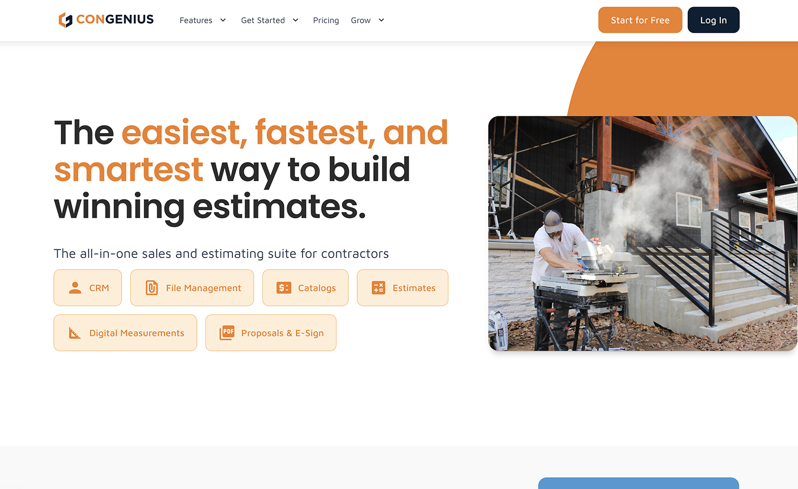
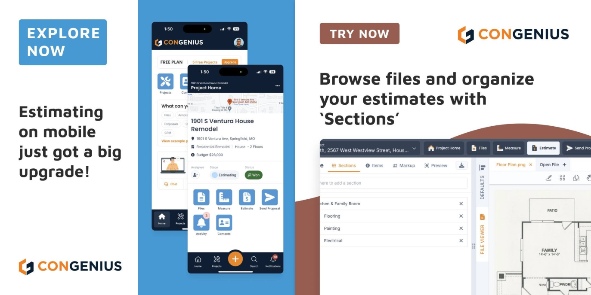
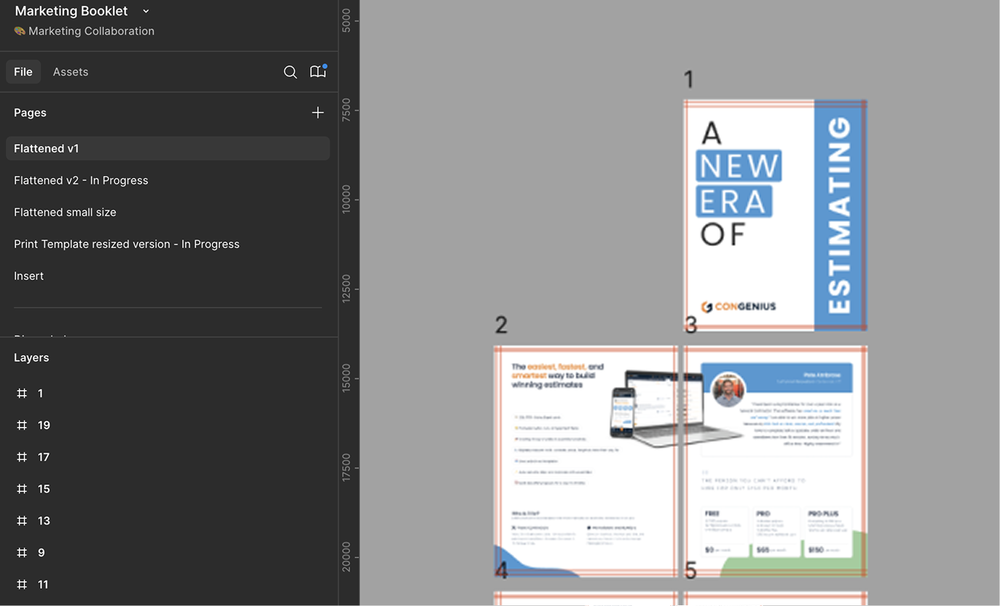
The product work would have been moot without pipeline, and there was no marketing function to produce any. So I built one.
Measured: ~2,700 conversions from campaigns I built and ran, at roughly half the cost per lead the business was willing to pay.
Attributable on purpose: I set up GTM and GA conversion tracking, so every number on this page traces to an event I can show.
Range: I'm a product designer. At eight people, product work and demand work were the same job.
Three things had to exist before any of it worked: a marketing site that could actually be updated, an ad account, and tracking that could attribute a dollar of spend. I built all three.
Trusted with more each time: graphics, then the site, then the whole demand side
It started with graphics. Three years on staff as a graphic designer at Purdue, with MarCom Awards and an ADDY out of that work, gave leadership proof before ConGenius ever needed a marketer. That work earned the website next, and the website earned the ad account after it: each step out, I got handed more because the last one held.
At eight people, marketing stayed in-house, which is part of why the door opened at all. What kept it open was that each step came back further along than what was asked for: the site, the ad account, the tracking that made any of it provable, and the brand underneath all three, built as one system.
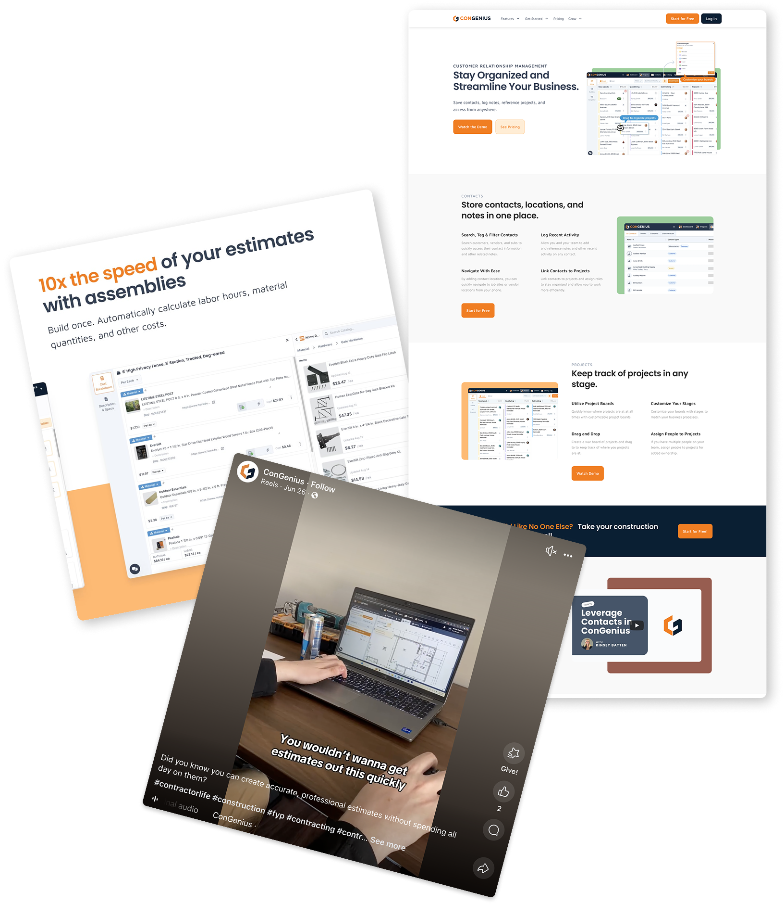
The marketing site, on the third try
The first two versions needed a developer for every change, so the changes stopped happening. The third one had to be editable by someone who wasn't one.
Why the third one held
A site that needs a developer for every edit stops representing the company within about a quarter, and then every campaign is pointing traffic at something out of date.
I rebuilt it in Framer with reusable components, micro-interactions, and custom graphics and video mockups, so the marketing lead could change it on the day the message changed.
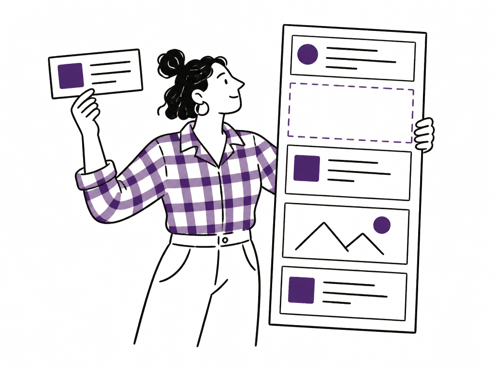
swaps a section out same day, no developer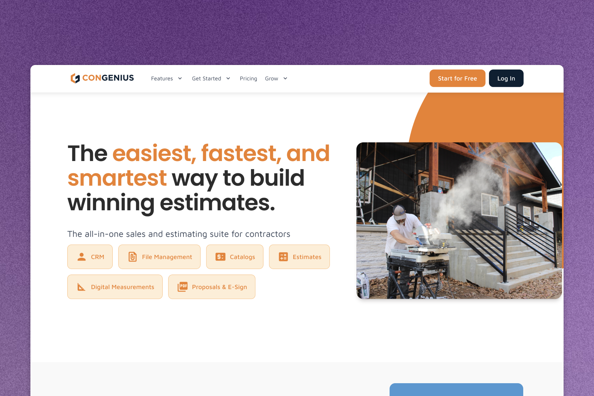
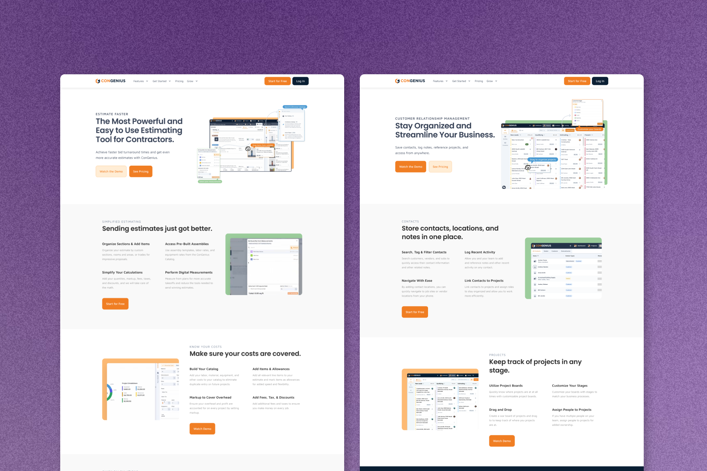
The Framer rebuild: homepage and one of the reusable templates underneath it.
41 ad creatives, ~2,700 conversions, and making the spend attributable
I set up the ad account, designed every creative in it, and built the tracking that turned "is this working" from an opinion into a number.
The demand side, and making it attributable
I set up and ran the Meta ad account and designed 41 ad creatives across the campaign set. The tracking is the part I'd point at first. I set up GTM and GA conversion tracking, so the spend was attributable down to the event.
I'd rather find out whether the thing worked than assume it did, which meant building the measurement before I could claim anything from it.
Once it was measurable, I scaled it deliberately. Budget went up in steps, and conversions tracked it close to one for one, so I kept going. Then we made a single large jump, roughly ten times the daily spend, specifically to find where that stopped being true. It bought about seven times the signups, not ten: at that level the targeting has to broaden to spend the money, and the audience gets worse as it gets bigger. Knowing where that ceiling sat was worth more than the extra volume.
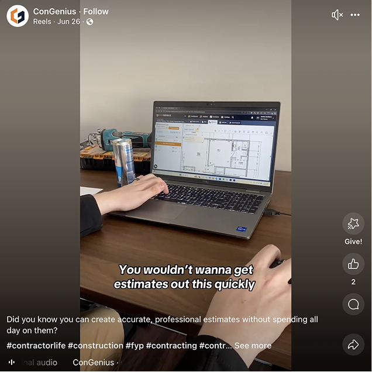
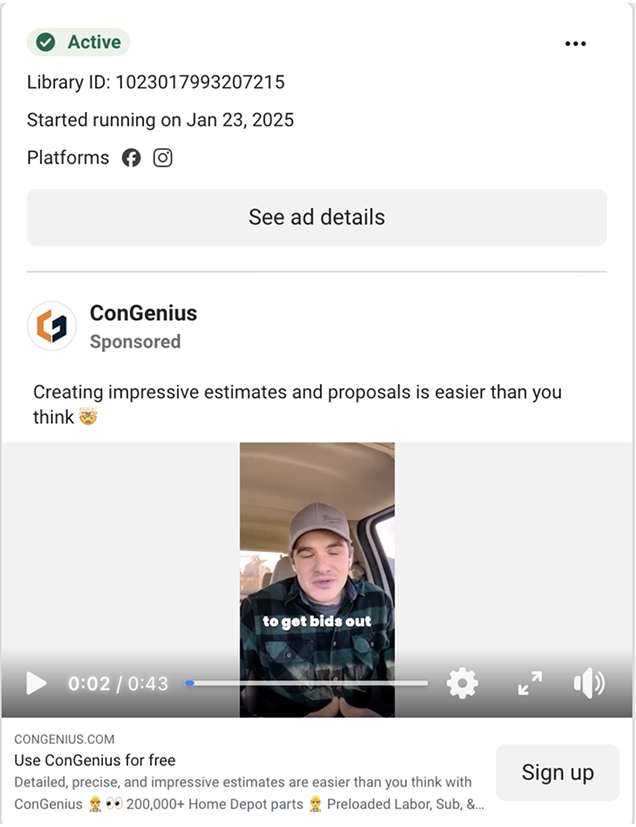
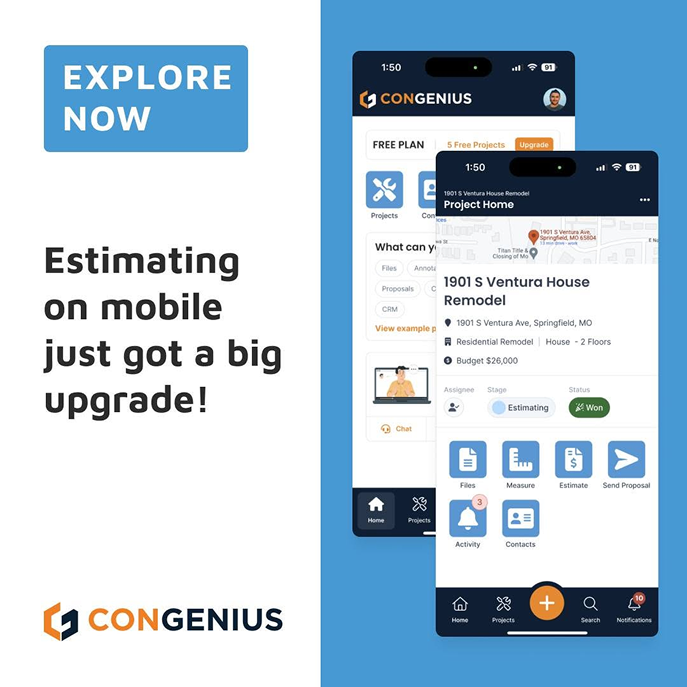
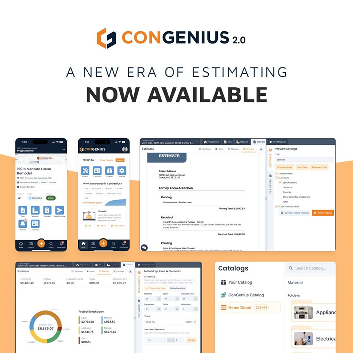
A sample of the 41 ad creatives, mixed static and video, from the campaign set.
The headline figures are real and were measured through tracking I set up myself, which is the reason I trust them.
What they measure is lead volume at a cost. I can show the spend produced conversions at roughly half the target CPL. I cannot show what those leads were worth once sales had them.
Changing the layouts first, because colour was not winnable yet
The brand was navy and orange and leadership was not moving off it. Arguing about colour first would have lost, so I did not start there.
Spending credibility on the thing I could actually move
The existing language was navy and orange, and those two colours were not up for discussion. Everything built from it looked like enterprise software from a much larger company: rigid grids, safe compositions, nothing that would stop a contractor mid-scroll. I thought that was the actual problem. Leadership did not, and going straight at the palette would have been a short argument I lost.
So I left the colours alone and worked on the layouts, which nobody was defending: more fluid compositions, custom graphics and video mockups where the old work had used stock, asymmetry where the grid had been holding everything at attention. That work was visibly better in a way that did not require anyone to concede a point. Once it had been running a while, the palette conversation reopened on its own and I was allowed to explore beyond the two colours. The brand system, the typography and the asset library came out of that, and the site and the 41 ad creatives are only coherent because it existed.

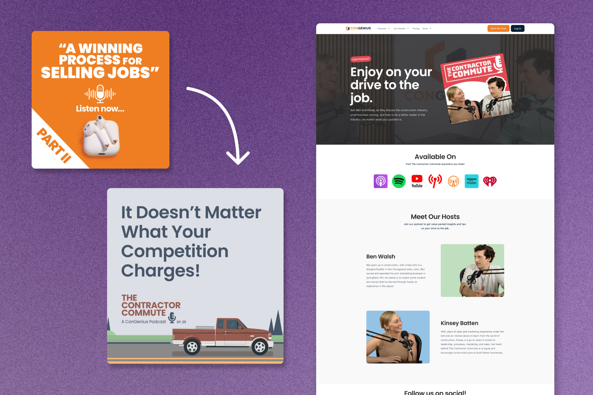
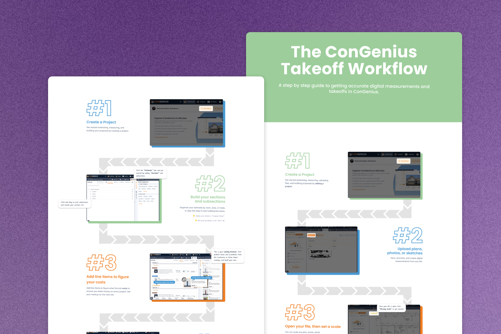
The brand system, podcast video/thumbnail assets, and a support infographic, one set from each.
Where I got this wrong
Sequencing the argument worked, and I did not apply it consistently. There were stretches where a request came in, I could see a better version of it, and I built the requested one anyway because it was faster and nobody was going to mind. No campaign suffered for it and the company never noticed. I still count those as the failures on this half of the job, because the whole reason the colour argument was winnable later was that the earlier work had been better than what was asked for. Every time I just complied, I spent nothing and earned nothing.